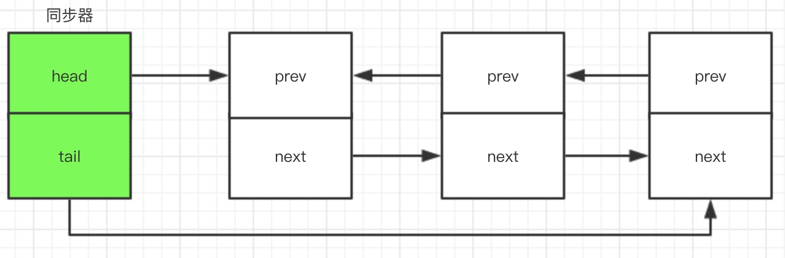
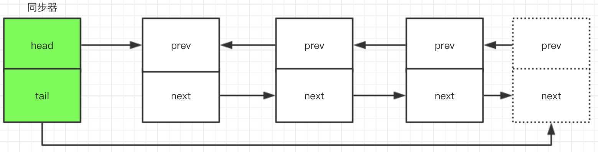
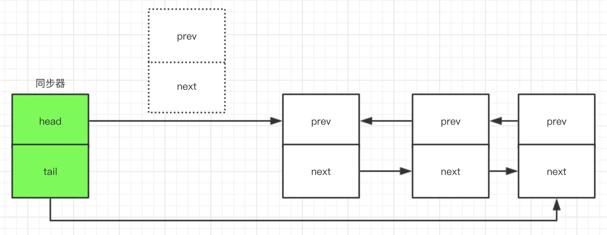
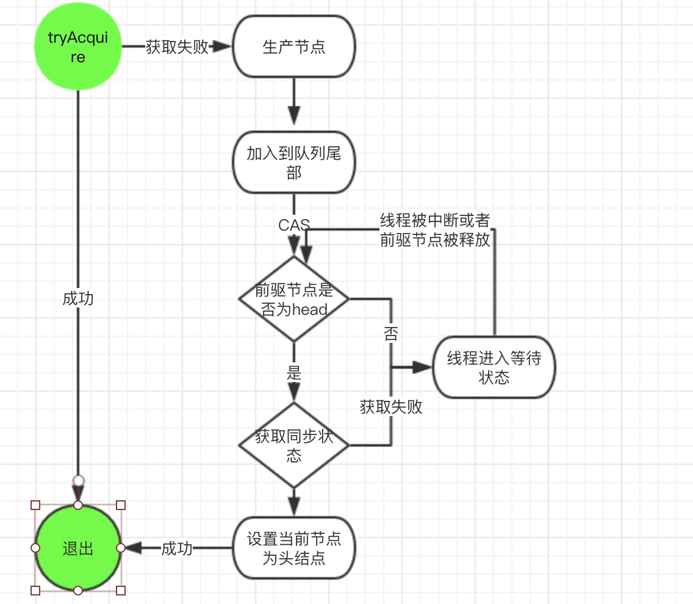

概述
AQS 全称 AbstractQueueSynchronizer(队列同步器)，是用来构建其他锁和同步组件的基础框架。AQS 使用一个 volatile int state 变量来表示同步状态。并提供对应的 getState, setState(int newState) 以及 compareAndSetState 来对 state 进行状态管理。AQS本身没有实现任何接口，主要使用方式是继承。既支持实现独占式锁，又支持共享式锁。这样就很好的实现不同的同步组件(ReentrantLock, ReadWriteLock等)。
同步器是实现锁的关键，简单点说，在锁里面实现聚合同步器，利用组合类的方式，锁面向使用者，而同步器是锁的具体实现，这样对于使用者来说，屏蔽了同步状态的管理，线程的排队，等待与唤醒。1
2
3
4
5
6
7
8
9
10
11
12private volatile int state;
protected final int getState() {
return state;
}
protected final void setState(int newState) {
state = newState;
}
protected final boolean compareAndSetState(int expect, int update) {
// See below for intrinsics setup to support this
return unsafe.compareAndSwapInt(this, stateOffset, expect, update);
}
同步器接口与模板方法示例
同步器的设计是基于模板方法，使用者需要先继承同步器并重写指定的方法，而模板方法则会调用这些重写的方法。同步器将会组合在自定义同步组件中，自定义通过调用模板方法实现状态同步的功能。
使用同步器方法的同时使用 getState, setState(int newState) 以及 compareAndSetStatte 来修改与访问同步状态。而模板方法一般分为三类
- 独占式的获取与释放同步状态
- 共享式的获取与释放同步状态
- 获取同步队列中的线程集合。
我们下来看一下模板方法:
| 方法名称 | 方法描述 |
|---|---|
| void acquire(int arg) | 独占式获取同步状态。 |
| void acquireInterruptibly(int arg) | 可中断式的获取同步状态。 |
| boolean tryAcquireNanos(int arg, int nanos) | 在acquireInterruptibly的基础上加入超时机制，如果超时还未获取同步状态，返回false |
| void acquireShard(int arg) | 共享式获取同步状态 |
| void acquireShardInterruptible(int arg) | 在acquireShard的基础上加入中断机制。 |
| void tryAcquireShardNanos(int arg, int nanos) | 在acquireShardInterruptible的基础上加入超时机制，如果超时还未获取同步状态，返回false |
| boolean release(int arg) | 独占式的释放共享状态，如果成功释同步状态之后，将同步队列唤醒第一个等待线程。 |
| boolean releaseShard(int arg) | 共享式释放同步状态。 |
| Collection |
获取同步队列上的线程集合。 |
还有提供的可重写的方法:(注意这些方法都是protected)
| 方法名称 | 方法描述 |
|---|---|
| void tryAcquire(int arg) | 独占式的获取同步状态，实现该方法需要查询状态，并判断状态是否符合预期，最后利用CAS设置同步状态 |
| void tryRelease(int arg) | 独占式释放同步状态，等待获取同步状态的线程将有机会获取同步状态 |
| int tryAcquireShard(int arg) | 共享式的获取同步状态，当返回值大于0的时候，表示获取成功。 |
| int tryReleaseShard(int arg) | 共享式的释放同步状态 |
| boolean isHeldExclisively() | 一般用来判断同步状态是否被占用。 |
怎么样实现一个简单同步组件
可能上面讲了那么多理论，大家还是一头雾水，那实现一个简单同步组件的步骤有哪一些呢:
- 1）声明同步器，并继承 AbstractQueuedSynchronizer。
- 2) 重写AbstractQueuedSynchronizer 的可重写方法。
- 3) 在同步组件中(如果是锁，一般配合Lock接口使用)利用接口方法调用同步器的模板方法和已经重写的方法。
我们来看看简单的实现例子1
2
3
4
5
6
7
8
9
10
11
12
13
14
15
16
17
18
19
20
21
22
23
24
25
26
27
28
29
30
31
32
33
34
35
36
37
38
39
40
41
42
43
44
45
46
47
48
49
50
51
52
53
54
55
56
57
58
59
60
61
62/**
* 简单互斥锁实现
* <p>@Author Kam</p>
* <p>@Date 2018/5/3</p>
* <p>@Version</p>
*/
public class Mutex implements Lock{
//声明同步组件
private static class Sync extends AbstractQueuedSynchronizer{
//判断同步状态是否被占用
protected boolean isHeldExclusively() {
return getState() == 0;
}
//尝试获取同步状态
protected boolean tryAcquire(int arg) {
if(compareAndSetState(0,1)){
setExclusiveOwnerThread(Thread.currentThread());
return true;
}
return false;
}
//尝试释放同步状态
protected boolean tryRelease(int arg) {
if (getState() == 0){
throw new IllegalMonitorStateException();
}
//设置当前
setExclusiveOwnerThread(null);
setState(0);
return true;
}
}
private static Sync sync = new Sync();
//获取锁
public void lock() {
sync.acquire(1);
}
//可中断的获取锁
public void lockInterruptibly() throws InterruptedException {
sync.acquireInterruptibly(1);
}
//尝试获取锁
public boolean tryLock() {
return sync.tryAcquire(1);
}
//尝试获取锁(超时策略)
public boolean tryLock(long time, TimeUnit unit) throws InterruptedException {
return sync.tryAcquireNanos(1, unit.toNanos(time));
}
//释放锁
public void unlock() {
sync.release(1);
}
public Condition newCondition() {
return null;
}
}
测试:1
2
3
4
5
6
7
8
9
10
11
12
13
14
15
16
17
18
19
20
21
22
23
24
25
26
27
28
29
30
31
32
33
34
35
36
37
38
39
40
41
42
43
44
45
46
47
48
49
50
51
52
53
54
55
56
57
58
59
60
61
62
63
64
65
66
67
68
69/**
* 简单互斥锁测试
* <p>@Author Kam</p>
* <p>@Date 2018/5/3</p>
* <p>@Version</p>
*/
public class MutexTest {
private static int index = 0;
private static Mutex mutex = new Mutex();
private static void incrementIndex(){
index++;
}
private static void incrementIndexWithLock(){
mutex.lock();
index++;
mutex.unlock();
}
public static void main(String[] arg) throws Exception {
CyclicBarrier barrier = new CyclicBarrier(11);
for (int i = 0; i < 10; i++){
Runnable runnable = new Runnable() {
public void run() {
for (int i=0; i < 10000; i++){
incrementIndex();
}
try {
barrier.await();
} catch (InterruptedException e) {
e.printStackTrace();
} catch (BrokenBarrierException e) {
e.printStackTrace();
}
}
};
Thread thread = new Thread(runnable);
thread.start();
}
barrier.await();
System.out.println("不加锁的加法--->index:"+index);
index = 0;
barrier.reset();
for (int i=0; i< 10; i++){
Runnable runnable2 = new Runnable() {
public void run() {
for (int i=0; i < 10000; i++){
incrementIndexWithLock();
}
try {
barrier.await();
} catch (InterruptedException e) {
e.printStackTrace();
} catch (BrokenBarrierException e) {
e.printStackTrace();
}
}
};
Thread thread2 = new Thread(runnable2);
thread2.start();
}
barrier.await();
System.out.println("加锁的加法--->index:"+index);
}
}
结果:
不加锁的加法—>index:96439
加锁的加法—>index:100000
结论:我们可以看到，实现一个互斥锁并没有想象中的难，因为AQS已经将很多复杂的同步操作透明化了。我们只要熟悉可重写的方法，和模板方法，就可以根据需求，对volatile int state 这个同步状态进行操作，实现我们想要的同步组件。
源码分析
接下来我们结合源码来讲讲同步队列，独占式获取与释放同步状态以及共享式的获取与释放同步状态等原理。
同步队列
同步器通过一个FIFO的队列来完成state同步状态的管理。当线程获取同步状态失败的时候，同步器会将当前的线程以及等待信息组装成一个Node结构，并将这个Node加入同步队列，阻塞当前线程。当同步状态释放的时候，同步队列首节点的线程将会唤醒，使其可以重新尝试获取线程。(同步队列又被称为CLH队列)
1 | static final class Node { |
同步器包含两个节点引用: 头结点(head)和尾节点(tail) ,头结点指向正在获取同步状态的节点，尾节点指向的是同步同列的最后
一个节点。如下图:

当一个线程第一次获取同步状态失败,会利用基于CAS的方法compareAndSetTail加入到同步队列的后尾，只有当前节点成功加入队列
才才会与tail引用建立起关联。如下图:

当队列首节点获取同步状态成功后，会从队列的头部移除，因为当前只会有一个节点可获取同步状态成功，也就不存在多线程竞争的关系，所以设置头节点并不需要使用CAS的方法，它只需要将head节点设置为原首节点的后继节点，并将原首节点的next断开。如下图:

独占式的获取与释放同步状态
我们上面有提到，可以利用acquire(int arg)方法可以独占式的获取同步态，该方法对中断不敏感1
2
3
4
5public final void acquire(int arg) {
if (!tryAcquire(arg) &&
acquireQueued(addWaiter(Node.EXCLUSIVE), arg))
selfInterrupt();
}
这段代码的完成了同步状态获取，节点构造，以及加入同步队列。主要逻辑是
1）首先acquire调用了 自定义实现的函数tryAcquire 去获取同步状态。如果获取成功则完成退出函数
2) 如果获取失败，则调用addWaiter(Node.EXCLISIVE)构建节点，并放置到队列尾部。
3) 将上一步的节点以CAS的方式获取同步状态。如果获取成功则返回
4) 如果获取同步状态失败则阻塞节点中的线程。当前驱节点释放同步状态后则会重新唤醒该线程。1
2
3
4
5
6
7
8
9
10
11
12
13
14
15
16
17
18
19
20
21
22
23
24
25
26
27
28
29
30
31
32
33
34
35private Node addWaiter(Node mode) {
//构建独占式节点
Node node = new Node(Thread.currentThread(), mode);
// Try the fast path of enq; backup to full enq on failure
Node pred = tail;
//判断尾节点是否为空
if (pred != null) {
node.prev = pred;
//如果尾节点不为空，则利用CAS设置尾节点。
if (compareAndSetTail(pred, node)) {
pred.next = node;
return node;
}
}
//如果尾节点为空，则当前队列为空队列，构建新的队列。
enq(node);
return node;
}
private Node enq(final Node node) {
for (;;) {
Node t = tail;
if (t == null) { // Must initialize
//如果尾节点为空，则构建同步器队列
if (compareAndSetHead(new Node()))
tail = head;
} else {
node.prev = t;
//队列构建后则利用CAS加入队列尾部
if (compareAndSetTail(t, node)) {
t.next = node;
return t;
}
}
}
}
代码主要使用compareAndSetTail(Node expect, Node Update)方法来保证节点正确加入队列尾部。而enq方法主要是在队列不存在
的时候先构建队列并且利用死循环加入队列尾部。
1 | final boolean acquireQueued(final Node node, int arg) { |
在 acquireQueued函数我们可以看到，队列维护了FIFO的原则，只有前驱节点是头结点的节点才可以尝试去获取同步状态。
我们总结独占式同步状态获取主流程图。如下

独占式释放同步状态
当线程成功获取锁之后，执行完自己的代码逻辑，就需要释放同步状态了。这样后面的节点就可以继续获取同步状态了。同步器调用
release(int arg)来释放同步状态1
2
3
4
5
6
7
8
9
10
11public final boolean release(int arg) {
if (tryRelease(arg)) {
//如果释放同步状态成功
Node h = head;
if (h != null && h.waitStatus != 0)
//唤醒后续节点，让后续节点可以继续获取同步状态
unparkSuccessor(h);
return true;
}
return false;
}
总结
至此，我们对AQS的同步队列，以及独占式的获取与释放同步状态有一定的了解，我们后续会讲共享式的获取以及释放同步状态。